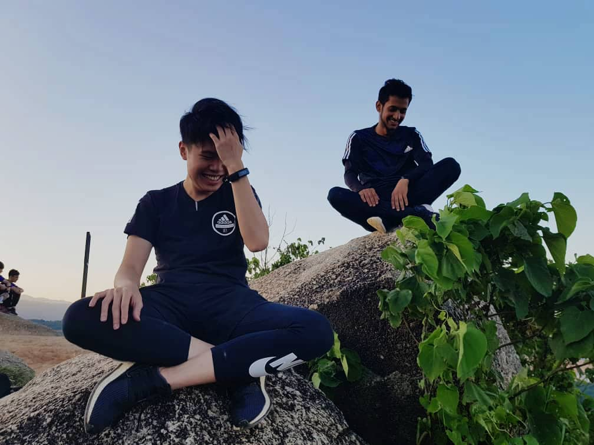
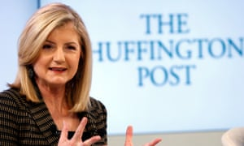
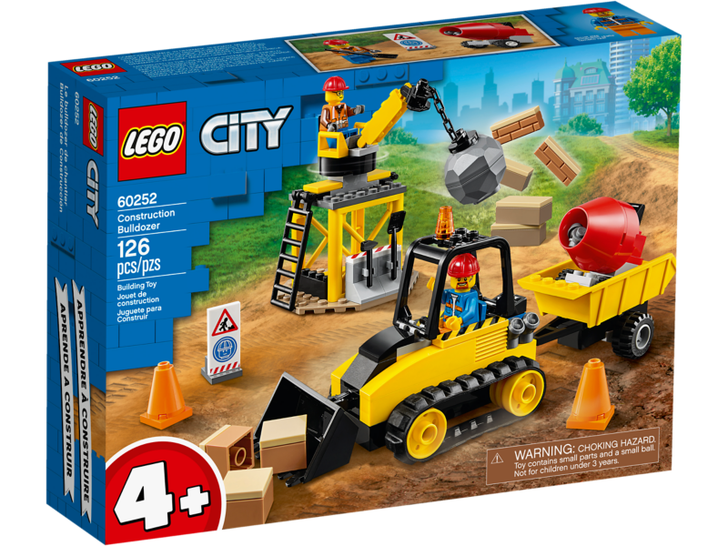
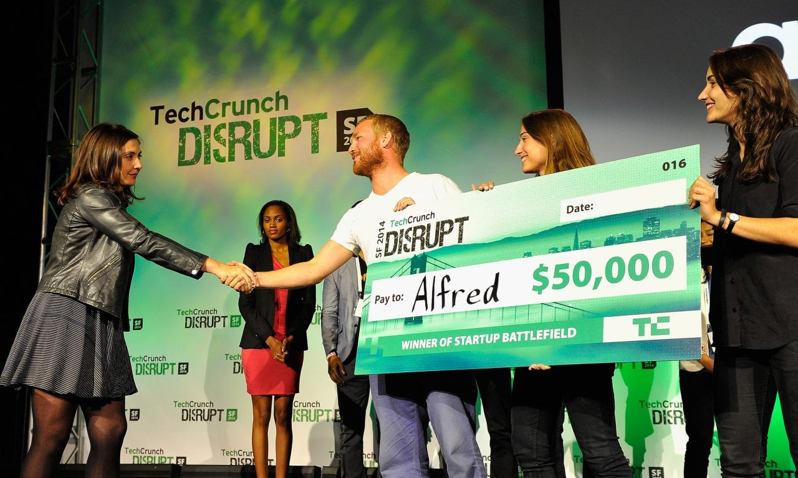

In this blog I will be introducing you to my life so basicaaly alll the activities I perform on the daily bases
Blog One

Today we made the video while I was going to Broga Hill with my college friend. It was not an ordinary trip sice this was my first time joining them for hiking I do hike on Normally basis but with a group its compeletly different. The purpose for this hike was to shoot a video for one of our assignment in college and show team work. Well let me tell you broga hill is very famous for hiking and it has mainly 3 stops. If you try to search on gogle then it might shows you two only but i have been there and have witnesed it. Well we will talk more about this in the blog itself so If you want to know more about the jounrney and want to read more for this blog then click here or you can just lick on blog 1 on the top on this picture.
Blog two

I read a story about Pride and prejudice which is a very interesting novel. I haven't finished it but this is the summary of it If you would like to know it in detail then Click here or on top of picture at blog two. The work, which Austen initially titled First Impressions, is the second of four novels that Austen published during her lifetime. Although Pride and Prejudice has been criticized for its lack of historical context, the existence of its characters in a social bubble that is rarely penetrated by events beyond it is an accurate portrayal of the enclosed social world in which Austen lived. She depicted that world, in all its own narrow pride and prejudice, with unswerving accuracy and satire. At the same time, she placed at its centre, as both its prime actor and most perceptive critic, a character so well conceived and rendered that the reader cannot but be gripped by her story and wish for its happy dénouement. In the end, Austen’s novel has remained popular largely because of Elizabeth—who was reportedly Austen’s own favourite among all her heroines—and because of the enduring appeal to men and women alike of a well told and potentially happily ending love story.
Blog three

The idea of this theatre began with the proposal in 1964 to establish a cultural centre. The construction work began in 1995 and was completed three years later. It was built at a cost of RM210 million with a theatre floor area of 21,000 m² as part of the 54,400 m² cultural complexThe building was designed by the local architect fi rm, ADC ARCHITECT SDN. The inspiration for the design is based on a traditional moon kite in flight. The turquoise folds on the roof and the intricate design of the foyer are just two of the interesting features of the building. Istana Budaya's architecture has intrigued experts and academics. Click here to read more
The Huffington Post
The history of political blogging might usefully be divided into the periods pre- and post-Huffington. Before the millionaire socialite Arianna Huffington decided to get in on the act, bloggers operated in a spirit of underdog solidarity. They hated the mainstream media - and the feeling was mutual.Bloggers saw themselves as gadflies, pricking the arrogance of established elites from their home computers, in their pyjamas, late into the night. So when, in 2005, Huffington decided to mobilise her fortune and media connections to create, from scratch, a flagship liberal blog she was roundly derided. Who, spluttered the original bloggerati, did she think she was? But the pyjama purists were confounded. Arianna's money talked just as loudly online as off, and the Huffington Post quickly became one of the most influential and popular journals on the web. It recruited professional columnists and celebrity bloggers. It hoovered up traffic. Its launch was a landmark moment in the evolution of the web because it showed that many of the old rules still applied to the new medium: a bit of marketing savvy and deep pockets could go just as far as geek credibility, and get there faster.To borrow the gold-rush simile beloved of web pioneers, Huffington's success made the first generation of bloggers look like two-bit prospectors panning for nuggets in shallow creeks before the big mining operations moved in. In the era pre-Huffington, big media companies ignored the web, or feared it; post-Huffington they started to treat it as just another marketplace, open to exploitation. Three years on, Rupert Murdoch owns MySpace, while newbie amateur bloggers have to gather traffic crumbs from under the table of the big-time publishers.
Boing Boing
Lego reconstructions of pop videos and cakes baked in the shape of iPods are not generally considered relevant to serious political debate. But even the most earnest bloggers will often take time out of their busy schedule to pass on some titbit of mildly entertaining geek ephemera. No one has done more to promote pointless, yet strangely cool, time-wasting stuff on the net than the editors of Boing Boing (subtitle: A Directory of Wonderful Things). It launched in January 2000 and has had an immeasurable influence on the style and idiom of blogging. But hidden among the pictures of steam-powered CD players and Darth Vader tea towels there is a steely, ultra-liberal political agenda: championing the web as a global medium free of state and corporate control. Boing Boing chronicles cases where despotic regimes have silenced or imprisoned bloggers. It helped channel blogger scorn on to Yahoo and Google when they kowtowed to China's censors in order to win investment opportunities. It was instrumental in exposing the creeping erosion of civil liberties in the US under post-9/11 'Homeland Security' legislation. And it routinely ridicules attempts by the music and film industries to persecute small-time file sharers and bedroom pirates instead of getting their own web strategies in order. It does it all with gentle, irreverent charm, polluted only occasionally with gratuitous smut. Their dominance of the terrain where technology meets politics makes the Boing Boing crew geek aristocracy.
Techcrunch
Techcrunch began in 2005 as a blog about dotcom start-ups in Silicon Valley, but has quickly become one of the most influential news websites across the entire technology industry. Founder Michael Arrington had lived through the internet goldrush as a lawyer and entrepreneur before deciding that writing about new companies was more of an opportunity than starting them himself. His site is now ranked the third-most popular blog in the world by search engine Technorati, spawning a mini-empire of websites and conferences as a result. Business Week named Arrington one of the 25 most influential people on the web, and Techcrunch has even scored interviews with Barack Obama and John McCain. With a horde of hungry geeks and big money investors online, Techcrunch is the largest of a wave of technology-focused blog publishers to tap into the market - GigaOm, PaidContent and Mashable among them - but often proves more contentious than its rivals, thanks to Arrington's aggressive relationships with traditional media and his conflicts of interest as an investor himself.